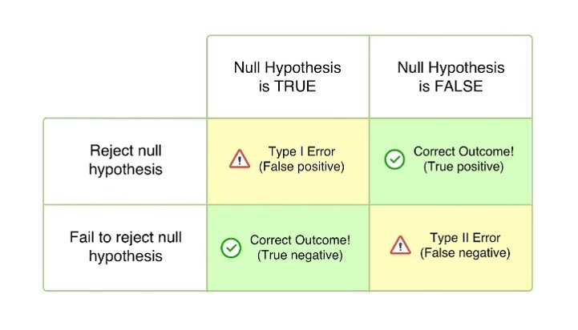
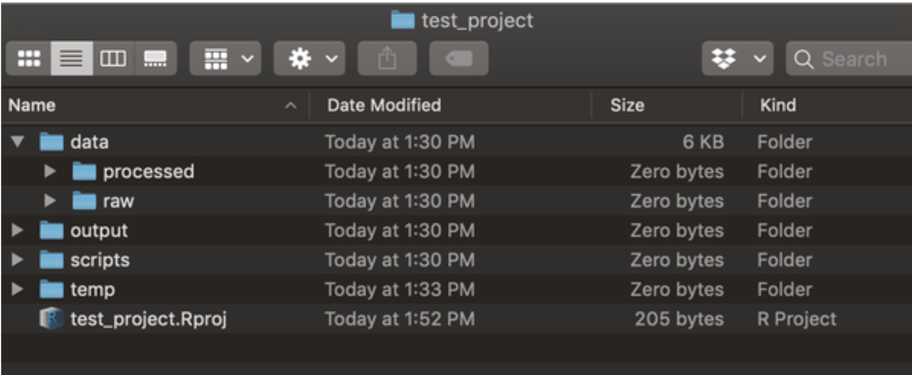
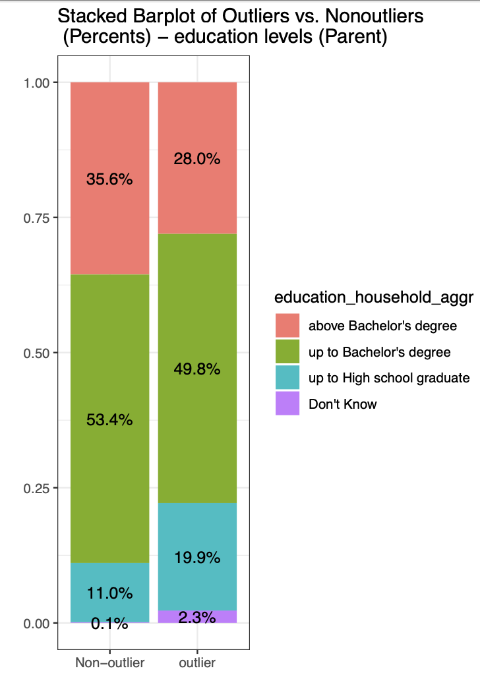
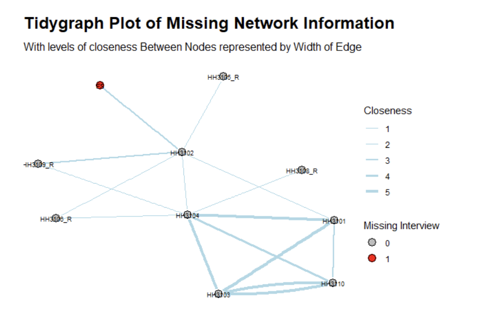

# libraries needed
library(tidyverse)
library(ggplot2)
# load data
data(mtcars)
# visualize the mtcars data
ggplot(mtcars, aes(x = wt, y = mpg)) +
geom_point() +
geom_smooth(method = "lm", se = FALSE) +
labs(title = "Relationship between Weight and Miles per Gallon",
x = "Weight (1000 lbs)",
y = "Miles per Gallon") +
theme_bw()Interpreting Data for Public Health, Research Policy, or Practice
PHC6930C - Intergrative Seminar in Public Health
Ana Bravo
üü†From the U of Miamiüü¢
2025-07-01
Objectives
- Understand the different ways of interpreting data
- Importance of Study designs & protocols
- Challenges with data
- What it means to interpret data
- How to data science (a gentle introduction)
Introduction
A little bit about me, hi I‚Äôm Ana üëã
- Mathematics tutor üßÆ
- Research Assistant
- Lab instructor
- just a title for “teaching assistant”
- Mathematics advisor
- Amateur Cook üë©‚Äçüç≥
- Non-profit board of directors for an LGBT+ org
- Data analyst from time to time
Data interpretation
Lets define what we first mean by interpreting data…
- Data interpretation is the process of making sense of data collected through research, instruments or surveys, experiments, or clinical trials. It involves the process of “extracting” the data to draw conclusions, identify patterns, make inferences, and informed decisions making based on findings.
Data is interpreted in many ways, and can be interpreted through many phases of a project or study. Starting from the begining such as the development of a research question, to the actual collection process itself, and through the means of eventually publishing these findings to inform other scientists and the greater public at large.
- When interpreting data, its important to consider the purpose, aims, and objectives of why this data was collected in the first place.
- Consider where the data comes from
- (e.g., medical records, surveys)
- population of interest
- (e.g., adults, children, marginalized populations)
- what is the purpose
- (e.g., to understand a phenomenon, improve health outcomes etc.)
- Consider where the data comes from
Today we will be going over the process of interpreting data at multiple points in the research process, and how this is important for public health related fields.
we will also be talking a little bit of the data science process, as some knowledge of data science practices is needed when interpretting data.
Study Design and protocol
lets start from the beginning …
The “what” and “why”
Study design and protocols are really the foundation of any research or project. They help us understand the “what” and “why” of your research project.
- what as in, what we are doing
- why as in, why are we doing this
Before you even interpret data, its important to understand why the research project is being conducted (or why should the study be funded).
What are you interested in investigating and why is it important
Ex: what are factors that contribute to achievement gaps?
Ex: Do certain activities in school lead to better health outcomes?
Does the use of alcohol, marijuana, and tobacco lead to use of other substances?
What is the significance of your design?
What does the research say about your topic?
It is important to be familiar with what other scientists have discovered so far.
Are there any gaps in the work?
- For ex: problem: there is a lot of data on childhood outcomes and diseases, but a lot of the research sometimes is after infection/or the disease has already progressed or already symptomatic. Solution -> understand the social, emotional, and behavioral activities through time (longitudinal) of a youth through their childhood, adolescent, and early adult development, so what are some of the factors that may have led to these events.
as a data scientists this is relevant for you because during this stage you are defining your research question and the type of data you expect to collect. This stage helps define your boundaries and scope of your project.
Launching a study protocol
Prior to getting your hands on the data (or interpretting it) consider how the project/study was designed. A study design will usually define the following..
What is the largest sample size you are allotted to be able to detect any effect (power analysis)
- Who are you recruiting (research subject)
- Are you working with human subjects?
- Animal subjects?
- Kids, adults, vulnerable populations?
- and if for example, you are working with kids, how does school schedule play a role in participation?
- Who is eligible and ineligible to participate in the study? (inclusion exclusion criteria)
- Ex: we are interested in investigating the association between suicidality and ADHD diagnosis, children diagnosed with tic-disorder are not eligible to participate.
- if you’re working with human subject research, especially if it’s a clinical trail for example, you should be informed and very aware of randomization allocation.
If you’re working with human subject research, consider who will be completing the protocol and if this is a multi-site project.
how many times will you be collecting this data?
is this supposed to be a longitudinal design or cohort study
- these questions are important because this will in turn, help you understand your analytical approach.
- for example, if you are working with a longitudinal design, you may want to consider a model that accounts for repeated measures.
- these questions are important because this will in turn, help you understand your analytical approach.
- What did the interview/ data collection process look like
- e.g., How long does a protocol take to finish
- What type of data (variables) are you collecting and why
- For ex: the ABCD protocol is a comprehensive set of physical, cognitive and social emotional, behavioral and academic assessments in addition to a neuroimaging and biospecimen analysis done either annually or bi-annually for 10 year through the child’s life.
What type of data was collected. Data comes in different flavors and types. First understanding the type of data that was collected helps you understand how to interpret it. data can include…
- Sociodemographic variables (age, income, gender, sex assigned at birth, migration status, relationship status, employment status)
- Anthropometric data (height, weight, waist measurement?)
- Family environment data Family environmental Scale (FES)
- Cultural value scales MACVS
- Biological specimen (hair urine, saliva, blood, blood samples)
- Neurocognitive tasks (RAVLT, EST NIH-TB)
- Neuroimaging (MRI Scan)
- Genomics (DNA, RNA)
Study Proposal üìö
how scientists convince potential funding agencies to fund their research
Proposing a study for funding
- funding is a critical part of the research process.
- if you are working with a study that collected human subject research data, you will need to create a study proposal.
research facilities, like universities, labs, organizations, or companies will need to create a study proposal.
this is pretty much a document that outlines the aims, objectives, and methods of the study. Essentially making a claim as to why the study is important and how it will be conducted.
Before I get my hands on the project, if I am working with a study that collected human subject research data, I like to go over the projects protocol, and aims and goals as well as the purpose.
What a study proposal contains
Determine your aims
- Ex: Determine social, behavioral, and emotional mechanisms that promote childhood well-being.
- Ex: Address intentional injuries across lifespan to understand associated risk factors of violence and injury epidemiology.
- Ex: Define the parameters of Type II Diabetes that include risk factors, in order to develop an effective wellness plan.
- In real life, you will not be able to measure the entire K-12 population of the U.S. to determine children’s social, behavioral, and emotional mechanisms. Instead, you will need to do a power sample analysis.
- Used to determine the adequate sample size by researchers to determine how many subjects/participants/observations are needed to answer your research question (null hypothesis) and avoid type I and Type II errors.

how long will this study be running? for two years, three years?
How much time will it take to recruit participants? (recruitment and enrollment)
how much time will it take to collect data? (data collection)
how much time will it take to clean the data?
- this part takes the longest IMO!
why is this important to do? What is the significance of this?
Ex: what are factors that contribute to achievement gaps?
Ex: Do certain activities in school lead to better health outcomes?
Ex: Does the use of alcohol, marijuana, and tobacco lead to use of other substances?
A lot of the reason human subject research is investigated is in the hopes of leading to new policies and interventions/decisions about the study population:
- what are factors that contribute to achievement gaps?
- Leads to policy decision in curricula and other programs
- How prevalent is traumatic brain injury (TBI) in student athletes?
- Assessment, education, precautions and changes in student athletics
- Does the use of alcohol and marijuana and tobacco lead to use of other substances?
- Leads to substance use prevention and early interventions.
- what are factors that contribute to achievement gaps?
Why am I talking about this as a data scientists? üë©‚Äçüî¨
Through the entire stage of getting to know the data its important to consider having a deep understanding of all that came before it
Why?
- Because having a solid understanding of study design helps for a solid understanding of the type of data the study should have collected
- factor, numerical, ordinal, continuous, discrete
- It helps also in presenting you findings, through visualizations
- Reproducibility
- As researcher you should be building reproducible workflows within the study design and protocol to ensure that other researchers can replicate your findings.
- Because having a solid understanding of study design helps for a solid understanding of the type of data the study should have collected
Reproducibility is a spectrum, and like all spectrum, it is important to understand that there are different levels of reproducibility.
One way to ensure that your work is reproducible you should use code! üë©‚Äçüíª
A (gentle) introduction on how to interpret data using data science
How to interpret data using data science practices.
1. Learn how to code
The data science and data analysis process can sometimes be iterative. What I mean by that is you may have to go back and forth between the steps of the data science process, such as EDA, computing, modeling, and visualizing. You may even do some repetitive things.
If you are doing something repetitive, using a programming language can help you automate your work (creating or using functions)
Even if what you’re doing isn’t repetitive, using a programming language can help ensure that all the work you’ve done “cleaning” the data is documented.
- You want to avoid “cleaning” data in a spreadsheet format like excel and directly editing values, because this can lead to errors and is not reproducible.
With cod you are able to data exploring, cleaning data, visualizing data, model data and report your data in a manuscript all on the same document, such as using Quarto.
Hello Quarto
2. Familiarize yourself with data basics
- Get to know where the data being housed (REDCap, Qualtrics Remote Server etc.)
- it’s important to know where you’re able to pull the data from, because then you’re able get the data immediately on your computer. (e.g., {tidyREDCap})
- You are also able to build your own REDCap shells in which you can collect data from observations (e.g., REDCap Resources)
- Explore the data:
- What does my data look like
- what are the largest and smallest values in my data
- is this particular variable a “type in” form (e.g., string)
- do I need to transform certain variables?
- do we need to group certain categories?
- in this step you also incorporate a little bit of visualizations
- Consider the programming language you will untilize
- R, SAS, Python, Stata, SPSS (R and RStudio my personal favorite)
- Consider using multiple language tools
- being a polyglot in programming languages is a good thing! But it’s good to also begin with one language first.
- Consider if your planning on publishing your findings through a manuscript or present these findings to an audience
- Familiarize yourself with an IDE
- Integrated Development Environment (IDE), which is pretty much a software application that helps you do all the DS process.
I like to use RStudio
or Positron
or VScode with the Quarto extension
- Integrated Development Environment (IDE), which is pretty much a software application that helps you do all the DS process.
- Modeling your data:
- Consider the appropriate test to use for the type of data you have
- will you be running a t-test, linear regression, maybe a mixed effects model more appropriate?
- what type of questions were asked and what type of data do you have:
- is this data correlated?
- is this data nested?
- do you have repeated measures?
- Consider the appropriate test to use for the type of data you have
⭐️ important: you should consult with your team (PI, epidemoligist, and your Data Scientist) when asking these questions
- Visualizing your data:
- what story do you want to convey to your audience?
- I think that science, especially if you are working with Community Based Research (CBR), should be accessible. Meaning, understandable to a wide audience. (doctors, people in health care, researchers, educators, and the community) so when conveying your findings, use plain english when appropriate.
- Do not do legalese ü§¢
- I think that science, especially if you are working with Community Based Research (CBR), should be accessible. Meaning, understandable to a wide audience. (doctors, people in health care, researchers, educators, and the community) so when conveying your findings, use plain english when appropriate.
- EDA and visualizing go hand-in-hand so consider building plots, graphs, visuals, and when it comes time to present findings.
- what story do you want to convey to your audience?
Databases
- REDCap: my favorite tool when it comes to managing data
- There is a fantastic video by an Associate Professor at the University of Miami on building Redcap (what I consider the golden standard in data collection) to collect research data on HIV and substance abuse

Exploratory Data Analysis
- this part is extremely important, no matter what field you are in public health.
- good practice to to ask yourself “what does my data even look like?”
- a basic overview of the EDA process is:
- generating descriptive statistics üìä
- check to see if there are any outliers (boxplots)
- maybe see if there is any differences between groups:
- e.g., calculating the average lifespan between men and women after a colorectal diagnosis
- this process also may include “cleaning” your data up a bit.
- this process is dynamic, and should be incorporated in every step
- or maybe your curious of seeing the general trend in the relationship between planktonic larvae duration and temperature?
- or maybe you want to see the general mean response rate of a certain instrument:

Computing the data
- Consider the type of programming language are you planning on using for your research project
- personally I like to set up a new project which is essentially dedicated folders storing the data, code, figures, outputs and scripts.

- this method ensures i keep rigorous documentation of every step i handle the data. this method also allows me to:
- include all my calculations (including modeling) in my code/manuscript.
- maintain a tidy level of reproducability
- and R is also free.
- SAS is a wonderful and powerful tool, but if you do not have a membership outside the university setting it is hard to access.
Visualizing the data
- EDA process and creating visualizations go hand in hand. Remember, during your EDA, you are trying to investigate what your data is trying to tell you. It is important to become familiar with the data and asking the right questions such as
- how does the variation between variables look like
- what does my distribution look like?
- when you understand or become familiar with the data you can visualize it to convey important messages to inform the public, and possibly leading the changes in policy, as well as drive decision making about the population.
Visualization examples




Modeling Data
check out the link below for developing good statistical practice when modeling with R.
- if relationships exist between two variables, it may appear as pattern in your data (thats why EDA is important because it may give you hints about these patterns)
- ask yourself if these patterns are due:
- to random chance
- how are you able to describe the relationship that implies this pattern
- what variable might be affecting this relationship?
- ask yourself if these patterns are due:
Modeling Data with R Cont.
# libraries needed --------------------------------------------------
library(sjPlot)
library(tidyverse)
# load mtcars data --------------------------------------------------
data(mtcars)
# model - simple linear regression ----------------------------------
m.mtcars <- lm(mpg ~ cyl + hp + wt, data = mtcars)
# show output in a table -------------------------------------------
tab_model(m.mtcars)| mpg | |||
| Predictors | Estimates | CI | p |
| (Intercept) | 38.75 | 35.09 – 42.41 | <0.001 |
| cyl | -0.94 | -2.07 – 0.19 | 0.098 |
| hp | -0.02 | -0.04 – 0.01 | 0.140 |
| wt | -3.17 | -4.68 – -1.65 | <0.001 |
| Observations | 32 | ||
| R2 / R2 adjusted | 0.843 / 0.826 | ||
what can we say about the relationship between mpg and wt when controlling for cyl and hp?
Bring it all together now üé∂
- Understand all these steps are vital points in interpreting your data:
- understand your project design helps you understand the goals and aims of your project. (prep)
- Exploring your data helps you understand the story your data is trying to tell you. (EDA)
- Visualizing your data helps you understand the patterns of your data. (visualize)
- Computing your data helps you understand the distributions of your data. (compute)
- Modeling your data helps you understand the relationships of your data. (model)
at each step, your making decisions about your data, and how you will interpret your findings.
Currently in my work..
- i’ve had to implement every aspect of what we just talked about including
- mutating or transforming the data
library(tidyverse)
starwars |>
select(name, mass, species) |>
group_by(species) |>
mutate(mass_norm = mass / mean(mass, na.rm = TRUE))# A tibble: 87 × 4
# Groups: species [38]
name mass species mass_norm
<chr> <dbl> <chr> <dbl>
1 Luke Skywalker 77 Human 0.947
2 C-3PO 75 Droid 1.08
3 R2-D2 32 Droid 0.459
4 Darth Vader 136 Human 1.67
5 Leia Organa 49 Human 0.603
6 Owen Lars 120 Human 1.48
7 Beru Whitesun Lars 75 Human 0.922
8 R5-D4 32 Droid 0.459
9 Biggs Darklighter 84 Human 1.03
10 Obi-Wan Kenobi 77 Human 0.947
# ℹ 77 more rows- categorizing or grouping
mpg cyl disp hp drat wt qsec vs am gear carb cg
Mazda RX4 21.0 6 160.0 110 3.90 2.620 16.46 0 1 4 4 high
Mazda RX4 Wag 21.0 6 160.0 110 3.90 2.875 17.02 0 1 4 4 high
Datsun 710 22.8 4 108.0 93 3.85 2.320 18.61 1 1 4 1 low
Hornet 4 Drive 21.4 6 258.0 110 3.08 3.215 19.44 1 0 3 1 low
Hornet Sportabout 18.7 8 360.0 175 3.15 3.440 17.02 0 0 3 2 low
Valiant 18.1 6 225.0 105 2.76 3.460 20.22 1 0 3 1 low
Duster 360 14.3 8 360.0 245 3.21 3.570 15.84 0 0 3 4 high
Merc 240D 24.4 4 146.7 62 3.69 3.190 20.00 1 0 4 2 low
Merc 230 22.8 4 140.8 95 3.92 3.150 22.90 1 0 4 2 low
Merc 280 19.2 6 167.6 123 3.92 3.440 18.30 1 0 4 4 high
Merc 280C 17.8 6 167.6 123 3.92 3.440 18.90 1 0 4 4 high
Merc 450SE 16.4 8 275.8 180 3.07 4.070 17.40 0 0 3 3 high
Merc 450SL 17.3 8 275.8 180 3.07 3.730 17.60 0 0 3 3 high
Merc 450SLC 15.2 8 275.8 180 3.07 3.780 18.00 0 0 3 3 high
Cadillac Fleetwood 10.4 8 472.0 205 2.93 5.250 17.98 0 0 3 4 high
Lincoln Continental 10.4 8 460.0 215 3.00 5.424 17.82 0 0 3 4 high
Chrysler Imperial 14.7 8 440.0 230 3.23 5.345 17.42 0 0 3 4 high
Fiat 128 32.4 4 78.7 66 4.08 2.200 19.47 1 1 4 1 low
Honda Civic 30.4 4 75.7 52 4.93 1.615 18.52 1 1 4 2 low
Toyota Corolla 33.9 4 71.1 65 4.22 1.835 19.90 1 1 4 1 low
Toyota Corona 21.5 4 120.1 97 3.70 2.465 20.01 1 0 3 1 low
Dodge Challenger 15.5 8 318.0 150 2.76 3.520 16.87 0 0 3 2 low
AMC Javelin 15.2 8 304.0 150 3.15 3.435 17.30 0 0 3 2 low
Camaro Z28 13.3 8 350.0 245 3.73 3.840 15.41 0 0 3 4 high
Pontiac Firebird 19.2 8 400.0 175 3.08 3.845 17.05 0 0 3 2 low
Fiat X1-9 27.3 4 79.0 66 4.08 1.935 18.90 1 1 4 1 low
Porsche 914-2 26.0 4 120.3 91 4.43 2.140 16.70 0 1 5 2 low
Lotus Europa 30.4 4 95.1 113 3.77 1.513 16.90 1 1 5 2 low
Ford Pantera L 15.8 8 351.0 264 4.22 3.170 14.50 0 1 5 4 high
Ferrari Dino 19.7 6 145.0 175 3.62 2.770 15.50 0 1 5 6 high
Maserati Bora 15.0 8 301.0 335 3.54 3.570 14.60 0 1 5 8 high
Volvo 142E 21.4 4 121.0 109 4.11 2.780 18.60 1 1 4 2 low- transforming the shape of the data
# turn wide data to long data for easier categorization
relig_income |>
pivot_longer(!religion, names_to = "income", values_to = "count")# A tibble: 180 × 3
religion income count
<chr> <chr> <dbl>
1 Agnostic <$10k 27
2 Agnostic $10-20k 34
3 Agnostic $20-30k 60
4 Agnostic $30-40k 81
5 Agnostic $40-50k 76
6 Agnostic $50-75k 137
7 Agnostic $75-100k 122
8 Agnostic $100-150k 109
9 Agnostic >150k 84
10 Agnostic Don't know/refused 96
# ℹ 170 more rows- Visualizing the data
library(igraphdata)
library(ggraph)
library(patchwork)
library(graphlayouts)
data("karate")
ggraph(karate, layout = "focus", focus = 1) +
draw_circle(use = "focus", max.circle = 3) +
geom_edge_link0(edge_color = "black", edge_width = 0.3) +
geom_node_point(aes(fill = as.factor(Faction)), size = 2, shape = 21) +
scale_fill_manual(values = c("#8B2323", "#EEAD0E")) +
theme_graph() +
theme(legend.position = "none") +
coord_fixed() +
labs(title = " Ego Network UM1010") ggraph(karate, layout = "focus", focus = 34) +
draw_circle(use = "focus", max.circle = 4) +
geom_edge_link0(edge_color = "black", edge_width = 0.3) +
geom_node_point(aes(fill = as.factor(Faction)), size = 2, shape = 21) +
scale_fill_manual(values = c("#8B2323", "#EEAD0E")) +
theme_graph() +
theme(legend.position = "none") +
coord_fixed() +
labs(title = "Ego Network UM1034")- create functions to automate my work
# create empty list for matched data
matching_data <- list()
# Loop through the CSV files
for (csv_file in csv_files) {
# Extract record ID from the file name
record_id <- gsub(".csv$", "", basename(csv_file))
# Check if the record ID matches any pattern in filtered_data
if (any(sapply(filtered_data$study_id, function(pattern) grepl(pattern, record_id)))) {
# Read the CSV file
csv_data <- read_csv(csv_file)
# Add the matching data to the list
matching_data[[length(matching_data) + 1]] <- csv_data
}
}
# make new df with matched observations
combined_data <- bind_rows(matching_data)
# plyr:rbind works and add NA values to missing values
matching_data |>
plyr::rbind.fill() - model my data
# load modeling package
library(lme4)
# subset mollusca only
Mollusca_subset <-
PLD |>
filter(phylum == "Mollusca")
# creating log -transformed variables
Mollusca_subset$log_pld <- log(Mollusca_subset$pld)
Mollusca_subset$log_temp <- log(Mollusca_subset$temp)
# mixed model with random intercept only
RandIntModel_Mollusca <- lmer(log_pld ~ log_temp + (1 | species), data = Mollusca_subset)
# summary of model fit
summary(RandIntModel_Mollusca)Linear mixed model fit by REML ['lmerMod']
Formula: log_pld ~ log_temp + (1 | species)
Data: Mollusca_subset
REML criterion at convergence: 43.7
Scaled residuals:
Min 1Q Median 3Q Max
-2.37222 -0.32686 -0.09382 0.43821 2.34871
Random effects:
Groups Name Variance Std.Dev.
species (Intercept) 0.86457 0.9298
Residual 0.03309 0.1819
Number of obs: 44, groups: species, 16
Fixed effects:
Estimate Std. Error t value
(Intercept) 7.1728 0.5284 13.575
log_temp -1.5175 0.1592 -9.531
Correlation of Fixed Effects:
(Intr)
log_temp -0.896interpretation of temp variable for the fixed part, we can interpret this parameter the same as a single-level regression model, so \(\beta_1\) is the increase/decrease in response for 1 unit increase/decrease in \(x.\) In other words, for one unit increase in the degrees of temperature, there is a -1.5 decrease in Planktonic larval duration. (or, as the temperature increase, the plankton duration is lower.)
Resources
R for Data Science https://r4ds.hadley.nz
Modeling with R https://www.tmwr.org
Introduction to Modern Statistics https://www.openintro.org/book/ims/
R for the Rest of Us https://rfortherestofus.com
Introdction to Statistical Learning https://www.statlearning.com/
Reproducible Research with R, RStudio, and Github - Raymond Balise https://vimeo.com/585821837
A Quart o’ {rUM} (Using the {rUM} Package for Reproducible Medical Research (https://www.youtube.com/watch?v=tiwx8mSUL1c&t=128s)
OpenIntro (https://www.openintro.org/)
- I ❤️ their books
Thank you!
Questions?